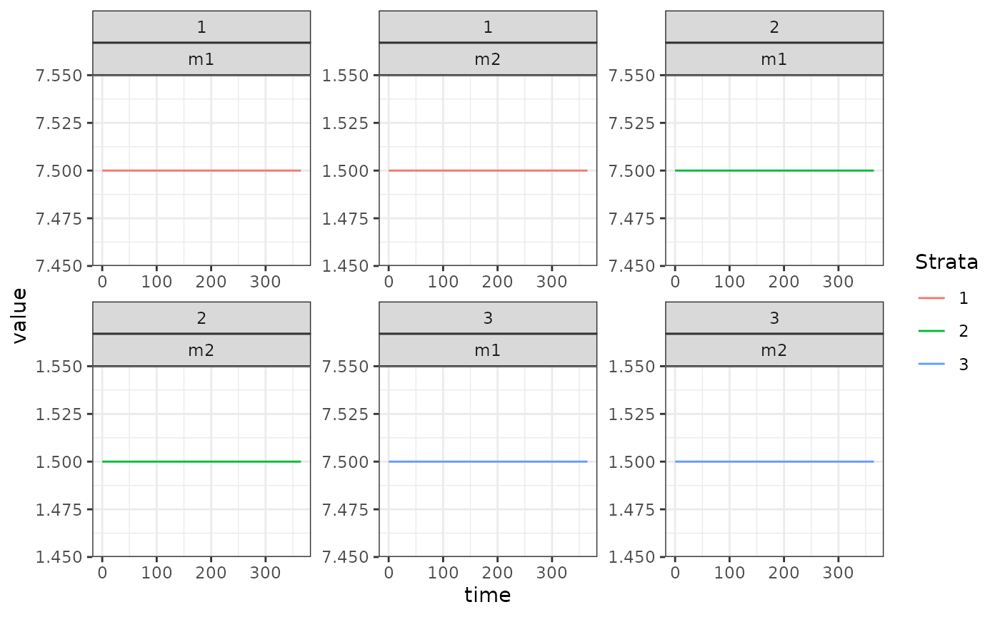

This is a hybrid model which tracks the mean multiplicity of infection (superinfection) in two compartments. The first, \(m1\) is all infections, and the second \(m2\) are apparent (patent) infections. Therefore \(m2\) is “nested” within \(m1\). It is a “hybrid” model in the sense of Nåsell (1985).
Differential Equations
The equations are as follows:
\[ \dot{m_{1}} = h - r_{1}m_{1} \] \[ \dot{m_{2}} = h - r_{2}m_{2} \] Where \(h = b EIR\), is the force of infection. Prevalence can be calculated from these MoI values by:
\[ x_{1} = 1-e^{-m_{1}} \] \[ x_{2} = 1-e^{-m_{2}} \] The net infectious probability to mosquitoes is therefore given by:
\[ x = c_{2}x_{2} + c_{1}(x_{1}-x_{2}) \]
Where \(c_{1}\) is the infectiousness of inapparent infections, and \(c_{2}\) is the infectiousness of patent infections.
Equilibrium solutions
One way to proceed is assume that \(m_{2}\) is known, as it models the MoI of patent (observable) infections. Then we have:
\[ h = r_{2}/m_{2} \] \[ m_{1} = h/r_{1} \] We can use this to calculate the net infectious probability, and then \(\kappa = \beta^{\top} \cdot x\), allowing the equilibrium solutions of this model to feed into the other components.
Example
Here we run a simple example with 3 population strata at equilibrium.
We use exDE::make_parameters_X_hMoI to set up parameters.
Please note that this only runs the human population component and that
most users should read our fully worked
example to run a full simulation.
We use the null (constant) model of human demography (\(H\) constant for all time). While \(H\) does not appear in the equations above, it must be specified as the model of bloodfeeding (\(\beta\)) relies on \(H\) to compute consistent values.
The Long Way
Here, we build a model step-by-step.
nStrata <- 3
H <- c(100, 500, 250)
residence = rep(1,3)
searchWtsH = rep(1,3)
b <- 0.55
c1 <- 0.05
c2 <- 0.25
r1 <- 1/250
r2 <- 1/50
TaR <- matrix(data = 1, nrow = 1, ncol = nStrata)
m20 <- 1.5
h <- r2*m20
m10 <- h/r1
EIR <- h/b
params <- make_parameters_xde()
params$nStrata = nStrata
params$nPatches = 1
params$eir = rep(EIR, 3)
F_eir = function(t, pars){
pars$eir
}
params = make_parameters_demography_null(pars = params, H=H, residence=residence, searchWts=searchWtsH, TaR=TaR)
params = make_parameters_X_hMoI(pars = params, b = b, c1 = c1, c2 = c2, r1 = r1, r2 = r2)
params = make_inits_X_hMoI(pars = params, rep(m10, nStrata), rep(m20, nStrata))
params = make_indices(params)
y0 <- get_inits(params)
out <- deSolve::ode(y = y0, times = c(0, 365), func = xDE_diffeqn_cohort,
parms = params, method = 'lsoda', F_eir = F_eir)
out1 <- out
colnames(out)[params$ix$X[[1]]$m1_ix+1] <- paste0('m1_', 1:params$nStrata)
colnames(out)[params$ix$X[[1]]$m2_ix+1] <- paste0('m2_', 1:params$nStrata)
out <- as.data.table(out)
out <- melt(out, id.vars = 'time')
out[, c("Component", "Strata") := tstrsplit(variable, '_', fixed = TRUE)]
out[, variable := NULL]
ggplot(data = out, mapping = aes(x = time, y = value, color = Strata)) +
geom_line() +
facet_wrap(Strata ~ Component, scales = 'free') +
theme_bw()
Using Setup
Xo = list(b=0.55, c1=0.05, c2=0.25, r1=1/250, r2=1/50, m20=1.5)
h = with(Xo, r2*m20)
Xo$m10 = with(Xo, h/r1)
Hpop = c(100, 500, 250)
h/b
#> [1] 0.05454545
fF_eir1 = function(EIR){return(function(t, pars){EIR})}
F_eir1 = fF_eir1(EIR)
xde_setup_cohort("test_hMoI", F_eir1, "hMoI", HPop=Hpop, Xopts = Xo) ->test_hMoI
xde_solve(test_hMoI, 365, 365)$outputs$deout -> out2
approx_equal(out2, out1)
#> logical(0)